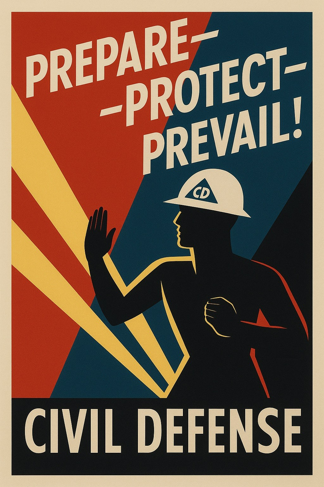

Identidad sin cuentas
Para usar CivilDefense no hay que registrarse, y no se solicita ningún número de teléfono ni correo electrónico. En cambio, cada navegador o instalación crea automáticamente una identidad aleatoria protegida criptográficamente, y la conserva hasta que tú la elimines.
Cómo te ven los demás
Cuando creas una alerta o respondes a una, la publicación se mostrará como «anónimo» con una imagen única generada automáticamente.
Si lo deseas, puedes cambiar lo que se muestra en cualquiera de los dos casos tocando el botón «CD» y proporcionando un texto de «alias» o una imagen de «avatar» diferentes. El alias y el avatar son la forma en que eliges ser reconocido; no tienen que ser únicos y se comparten con todos.

Cómo ves tú a los demás
Es posible que quieras reconocer de manera fiable a algunos colaboradores a lo largo del tiempo, aunque su alias y su avatar no sean únicos, o aunque los cambien entre una publicación y otra. Puedes hacerlo tocando su imagen de avatar y eligiendo un alias o un avatar con el que lo reconocerás. Esta elección nunca la ve nadie más, así que siéntete libre de etiquetarlos como necesites.
